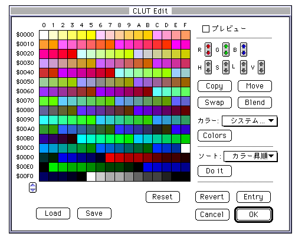
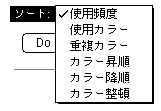
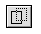
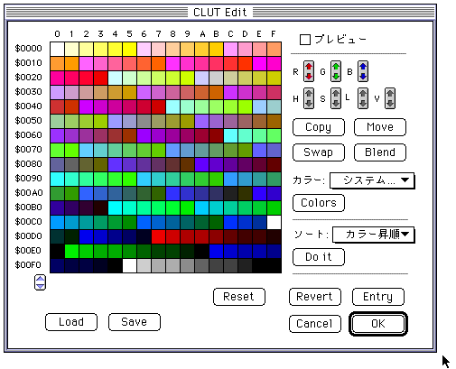
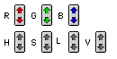
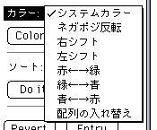
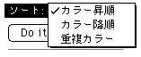
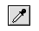
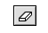

★Graphic Tools Guide
★セガペインタユーザーズマニュアル/
★Graphic Tools Guide
★セガペインタユーザーズマニュアル/
▲
戻る｜
進む▼
セガペインタユーザーズマニュアル
4.パレット・カラー
■パレット編集
- パレット情報の編集を行います。
現在作業中の書類の（範囲選択されている場合にはその選択範囲内の）画像が編集対象になります。

- □プレビュー
- 編集結果を実際に確定する前に、（編集対象となる）選択された書類ウィンドウ上に表示して確認します。
- □カラー変更
- 次の編集を行う際、パレット番号と共にそのカラーも編集します。
- Change：
- 指定範囲のパレット番号を、コピー元として指定します。
コピー先をクリックし、パレットコードを上書きします。
- Swap：
- 指定範囲のパレット番号を、入れ替え元として指定します。
入れ替え先をクリックし、パレットコードを入れ替えます。
- ●ソート

- Do Itボタンのクリックにより、パレットの並び替えを行います。
表示されているカラーテーブル上で範囲選択されている場合、その選択範囲内でソートされます。
現在作業中の書類ウィンドウ上で範囲選択されている場合、その選択範囲内のパレットコードのみがソートの対象となります。
- 使用頻度：
- 使用頻度の高い順にパレットを並び替えます。
- 使用カラー：
- 使用されているカラーからパレットを並び替えます。
- 重複カラー：
- 使用されているカラーのうち、同一のカラーをソートしてパレットを並び替えます。
このとき、�キーが押されている場合には、ソートによって消去されたパレット以降を前に詰めます。
- カラー昇順：
- カラーの明度の低い順にパレットを並び替えます。
- カラー降順：
- カラーの明度の高い順にパレットを並び替えます。
- カラー整頓：
- 使用されているカラーを前に、使用されてないカラーを後ろに並び替えます。
- ●Reset
- 現在作業していたパレットと編集対象の書類ウィンドウを、編集を始めたときの状態に戻します。
それまでの作業内容は全て破棄されます。
- ●Revert
- 現在作業していたパレットと編集対象の書類ウィンドウを、最後に保存された状態に戻します。
それまでの作業内容は破棄されます。
- ●Entry
- 現在までの作業内容をもとにパレットと編集対象の書類を変換・確定します。
- ●Cancel
- 現在までの作業内容を全て破棄して、パレット編集を終了します。
- ●OK
- 現在までの作業内容をもとにパレットと編集対象の書類を変換・確定して、パレット編集を終了します。
■パレット編集用ツール
- パレット編集における選択可能ツールは以下のとおりです。
- 選択系ツール
 長方形選択ツール
長方形選択ツール
- ドラッグ：
- 長方形で範囲を選択します。
- クリック：
- 選択範囲を解除します。
- 特殊ツール

ドラッグ＆ドロップツール
- パレット編集ウィンドウ→パレット編集ウィンドウ：
- ドラッグ元のカラーコードを、ドロップされたパレットコードに設定します。
- パレット編集ウィンドウ→パレットウィンドウ：
- ドラッグ元のカラーコードを、ドロップされたパレットコードに設定します。
- パレット編集ウィンドウ→カラーピッカウィンドウ：
- カラーピッカの編集カラーを、ドラッグ元のカラーコードに設定します。
- パレットウィンドウ→パレット編集ウィンドウ：
- ドラッグ元のカラーコードを、ドロップされたパレットコードに設定します。
- カラーピッカウィンドウのカラーボックス→パレット編集ウィンドウ：
- カラーピッカの編集カラーを、ドロップされたパレットコードに設定します。
■カラー編集
- SegaPainterの管理するカラーパレット情報を編集します。

- □プレビュー
- 編集結果を実際に変換する前に、（編集対象となる）書類ウィンドウ上に表示して確認します。
- ●RGBカラー・HSLカラー・V（強度）ボタン
- 選択範囲のRGB値、HSL値、V値を調整します。
各ボタンの上向き矢印をクリックすると値が大きくなり、下向き矢印をクリックすると値が小さくなります。

- ・赤の強さ
- ・緑の強さ
- ・青の強さ
- ・色 相
- ・彩 度
- ・明 度
- ・強 度
- ●Copy
- 指定範囲のカラーを、コピー元として指定します。
コピー先をクリックし、カラーコードを上書きします。
- ●Move
- 指定範囲のカラーを、移動元として指定します。
移動先をクリックし、カラーコードを上書きします。指定された移動元のカラーは消去されます。
- ●Swap
- 指定範囲のカラーを、入れ替え元として指定します。
入れ替え先をクリックし、カラーコードを入れ替えます。
- ●Blend
- 選択範囲内を先頭カラーと終了カラーへ階調をつけます。
- ●カラー

- Colorsボタンのクリックにより、カラーの変換等を行います。
- システムカラー：
- 選択範囲内のカラーを、システムパレットのカラーに変換します。
- ネガポジ反転：
- 選択範囲内のカラーを反転します。
- 右シフト：
- 選択範囲内のカラーをそれぞれ右に１つシフトします。
- 左シフト：
- 選択範囲内のカラーをそれぞれ左に１つシフトします。
- 赤←→緑：
- 選択範囲内のカラーのR値とG値を入れ替えます。
- 緑←→青：
- 選択範囲内のカラーのG値とB値を入れ替えます。
- 青←→赤：
- 選択範囲内のカラーのB値とR値を入れ替えます。
- 配列の入れ替え：
- カラー配列の縦横の並びを入れ替えます。
- ●ソート

- Do Itボタンのクリックにより、パレットの並び替えを行います。
- カラー昇順：
- 指定範囲内のパレットを明度の低い順に並び替えます。
- カラー降順：
- 指定範囲内のパレットを明度の高い順に並び替えます。
- 重複カラー：
- 指定範囲内のパレット中で重複するカラーコードを持つパレットのカラーを消去します。
- ●Load
- PhotoshopのCLUT形式のファイルを読み込みます。
データは現在編集中の１インデックス分のパレットに読み込まれます。
- ●Save
- 現在編集中の１インデックス分のパレットがPhotoshop形式のCLUTファイルで保存されます。
- ●Reset
- 現在作業していたカラーテーブルと編集対象の書類ウィンドウを、編集を始めたときの状態に戻します。
それまでの作業内容は全て破棄されます。
- ●Revert
- 現在作業していたカラーテーブルと編集対象の書類ウィンドウを、最後に保存された状態に戻します。
それまでの作業内容は破棄されます。
- ●Entry
- 現在までの作業内容をもとにカラーテーブルと編集対象の書類を変換・確定します。
- ●Cancel
- 現在までの作業内容を全て破棄して、カラー編集を終了します。
- ●OK
- 現在までの作業内容をもとにカラーテーブルと編集対象の書類を変換・確定して、パレット編集を終了します。
■カラー編集用ツール
- カラー編集における選択可能ツールは以下のとおりです。
- 選択系ツール
- 長方形選択ツール
- ドラッグ：
- 長方形で範囲を選択します。
- クリック：
- 選択範囲を解除します。
- 描画系ツール

スポイトツール
- クリック：
- クリックされたポイントのカラーをカラーピッカに表示します。

消しゴムツール
- ドラッグ：
- クリックされたポイントのカラーを消去します。
- Option+アイコンをダブルクリック：
- 表示されているインデックスのパレット全体（または、範囲選択されている場合にはその選択範囲内）のカラーを消去します。
- 特殊ツール
- ドラッグ＆ドロップツール
- カラー編集ウィンドウ→カラー編集ウィンドウ：
- ドラッグ元のカラーコードを、ドロップされたパレットコードに設定します。
- カラー編集ウィンドウ→パレットウィンドウ：
- ドラッグ元のカラーコードを、ドロップされたパレットコードに設定します。
- カラー編集ウィンドウ→カラーピッカウィンドウ：
- カラーピッカの編集カラーを、ドラッグ元のカラーコードに設定します。
- パレットウィンドウ→カラー編集ウィンドウ：
- ドラッグ元のカラーコードを、ドロップされたパレットコードに設定します。
- カラーピッカウィンドウのカラーボックス→カラー編集ウィンドウ：
- カラーピッカの編集カラーを、ドロップされたパレットコードに設定します。
▲
戻る｜
進む▼
★Graphic Tools Guide
★セガペインタユーザーズマニュアル/
Copyright SEGA ENTERPRISES, LTD., 1997